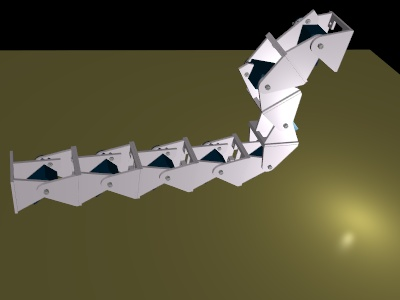
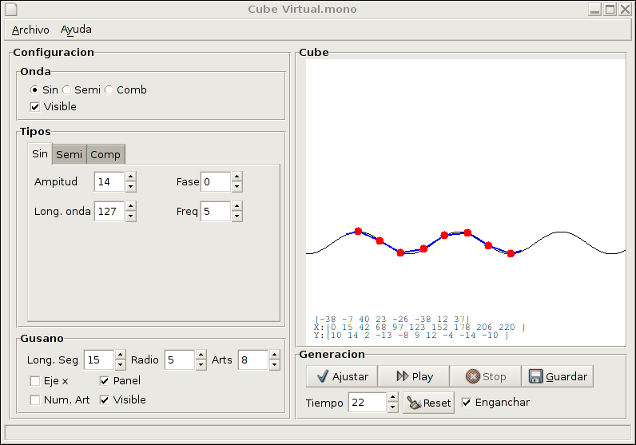
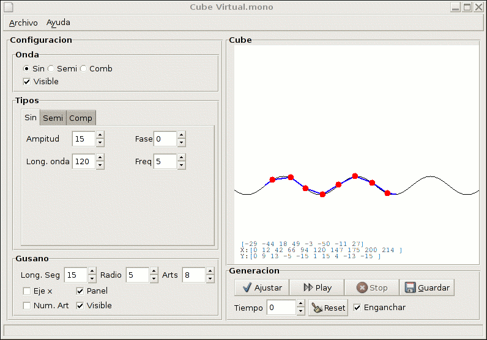

|
CUBE-VIRTUAL.MONO: Generación de secuencias para Cube Revolutions |
|
[Historia] |
|
 |
Programa para la generación automática de secuencias de movimiento para el robot Cube Revolutions. Mediante un modelo de propagación de ondas sinusoidales se generan las posiciones de los servos en los diferentes instantes de tiempo. Estas secuencias se pueden grabar en un fichero en formato .f8 para luego ser reproducidas en el robot utilizando el programa Star-servos8.
Mediante una interfaz gráfica se especifican los tipos de ondas a emplear: sinusoides, semisinusoidales o una combinación de dos sinusoidales. El movimiento resultante se puede reproducir en pantalla para su estudio.
Es una versión mejorada del programa Cube-virtual desarrollado para el control del gusano Cube reloaded.
Lenguaje: C#
Plataforma: Desarrollado con Mono. Debería ser por tanto un programa multiplataforma, aunque sólo se ha probado en Linux
Librerías gráficas: GTK#
Creación del interfaz: Glade
Generación de ficheros .f8
Parámetros del gusano actualizables dinámicamente por el usuario: número de articulaciones, radio, longitud de los segmentos...
Licencia: GPL
Este programa se distribuye bajo licencia GPL
Cube-virtual.mono en acción. En la parte de la derecha se muestran las articulaciones del gusano (puntos rojos) y los segmentos que las unen (líneas azules) que están sobre la onda de generación de movimiento. En la parte inferior derecha están los botones que permiten hacer las simulaciones. En la parte izquierda se definen los parámetros de la onda y del gusano.
|
 |
El manejo del programa es muy sencillo. Si se quiere probar, seguir los siguientes pasos:
Ejecutar el programa
Por defecto está seleccionada una función sinusoidal con unos parámetros iniciales. Pulsar el botón de “Play” situado en la parte inferior derecha. La onda comenzará a desplazarse y las articulaciones también lo harán, adoptando la forma de la onda.
Los parámetros de la onda se pueden cambiar mientras se está reproduciendo. Probar por ejemplo a variar la amplitud
Se puede utilizar otro tipo de onda, por ejemplo una semisinusoidal seleccionado la opción “Semi” en la parte superior izquierda.
La onda se puede ocultar pinchando en la opción “Visible”, en la parte superior izquierda.
También se pueden cambiar los parámetros del gusano. Por ejemplo, modificar el radio de las articulaciones en la entrada que pone “Radio” (que por defecto tiene el valor 5)
Con el botón de Stop se para la simulación.
Con el botón de Gardar se genera un fichero .f8 con la secuencia de movimiento, en el directorio donde se ejecutó el programa.
|
 |
La documentación de las clases se ha realizado con Doxygen, La clase principal es Gusano, que representa a un gusano virtual en 2D.
La clave de la generación de secuencias de movimiento es el algoritmo de ajuste, que se emplea en el método Gusano.Ajustar. Se le pasa una función y el algoritmo calcula los ángulos de las articulaciones para que todas se sitúen en puntos de la función. Para más información sobre el algoritmo de ajuste consultar:
Parte I: Teoría de Gusanos. En la página 86 está descrito el algoritmo de ajuste.
Toda la documentación de las clases y métodos está disponible aquí
Versión 1.0
Aplicación rehecha desde cero, utilizando el lenguaje C# y la plataforma Mono.
Se puede trabajar con cualquier número de articulaciones
Los parámetros de visualización del gusano se pueden cambiar: Longitud de los segmentos, radio de las articulaciones y número de ellas
Visualización opcional de los números de las articulaciones, el eje x, el gusano y el panel con la información de los ángulos de cada articulación y sus coordenadas (x,y)
Parámetros de las ondas sinusoidales: Amplitud, longitud de onda, fase y frecuencia
Parámetros de las ondas semisinusoidales: Amplitud, anchura, periodo espacial, fase y frecuencia.
Se puede trabajar también con la suma de dos ondas sinusoidales, aunque la grabación a ficheros .f8 no está implementada
Grabación de las sencuencias de movimiento sinusoidales y semisinusoidales a fichero .f8
[Junio-2001] La primera versión se realizó para el control del robot Cube 2.0. Estaba hecha en lenguaje C y con las librerías gráficas GTK 1.0. Las secuencias de movimiento se generaban sólo para un gusano de 4 servos.
[Junio-2003] La segunda versión, utilizada para Cube Reloaded, permitió el uso de semiondas, pero el interfaz y el funcionamiento eran similares a la versión inicial.
[Marzo-2005] Cube-virtual.mono 1.0. Programa reescrito en C#, utilizando Mono. La clase principal creada es Gusano. Ahora es mucho más fácil modificar el interfaz así como añadir nuevas funcionalidades. Se ha utilizado la versión 1.1.8 de Mono.
|
Ultima versión (1.0) |
|
Fuentes y ejecutable del programa cube-virtual.mono |
|
Secuencias de movimiento |
|
Secuencia de movimiento sinusoidal. Ejemplo 1 |
|
|
Secuencia de movimiento sinusoidal. Ejemplo 2 |
|
|
Secuencia de movimiento sinusoidal. Ejemplo 3 |
|
|
Secuencia de movimiento semisinusoidal. Ejemplo 4 |
|
|
Secuencia de movimiento semisinusoidal. Ejemplo 5 |
|
|
Secuencia de movimiento semisinusoidal. Ejemplo 6 |
Mono, desarrollo de aplicaciones .NET en entornos multiplataforma
Monodevelop, Entorno para desarrollo de aplicaciones en C#
GTK#, Librería gráfica para usar en entornos .NET
Glade. Aplicación para la creación de interfaces gráficos
Doxygen. Generación de documentación a partir del código fuente.
Cube Revolutions. Robot gusano. Tercera generación.
Cube reloaded. Robot gusano. Segunda generación.
Star-servos8. Reproducción de secuencias de movimiento en el robot Cube Revolutions.
13/Diciembre/2005: Añadido pantallazo animado
11/Diciembre/2005: Publicada versión 1.0